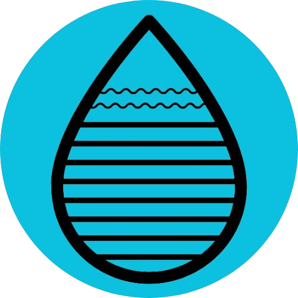
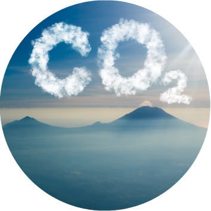
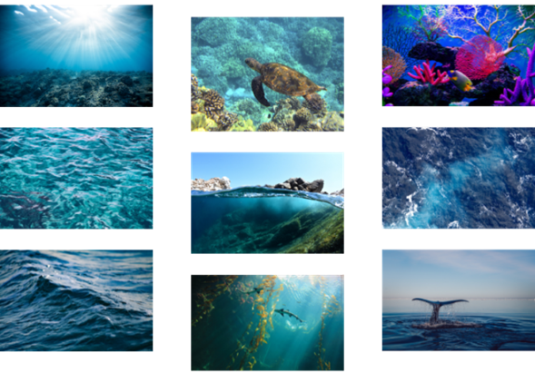
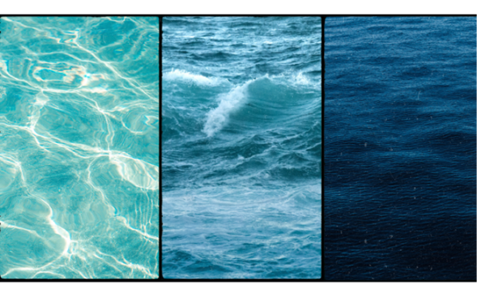

|  | Iniciar Sesión | Nosotros | Misión | Datos |
| Water Mind |
El océano es el latido azul de nuestro planeta, esencial para la vida de todos. Sus aguas son como los pulmones de la Tierra, produciendo la mayor parte del oxígeno que respiramos. Regula el clima, manteniendo la temperatura del mundo estable y suave. Sin el océano, el mundo sería un lugar seco y desolado. Es hogar de millones de criaturas, desde las más pequeñas hasta las más grandes, todas formando una red de vida que también nos sostiene a nosotros.
|
¿Qué es la acidificación de los océanos?
|
 |
|  |
Nosotros
|
Nuestro proyecto tiene como misión crear consciencia en las nuevas
generaciones de la contamianción marina, específicamente la
acidificación de los océanos con un sensor de pH duradero que
constantemente transmitirá datos en tiempo real a nuestra página, con el
fin de observar cuánto daño le hacemos a nuestro planeta.
